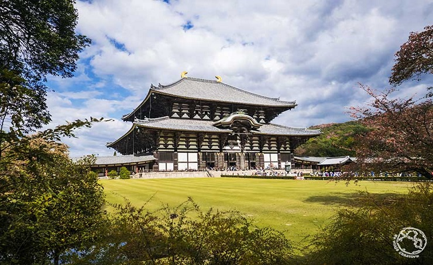

Nara

Nara, situada al sur de Kyoto, es una antigua capital de Japón con varios lugares destacados que visitar. El lugar más imprescindible que ver en Nara es el templo Todaiji, donde en el interior de su gran estructura de madera se encuentra el espectacular Gran Buda de Nara. Antes de llegar al templo pasarás por el bonito parque de Nara, lleno de ciervos con varios templos y jardines.
Visitar Nara es una de las excursiones más típicas de Kioto y se puede aprovechar el viaje en tren para ver uno de los santuarios más bonitos de Japón, el Fushimi Inari-Taisha.